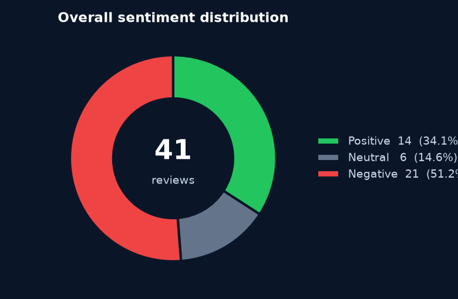
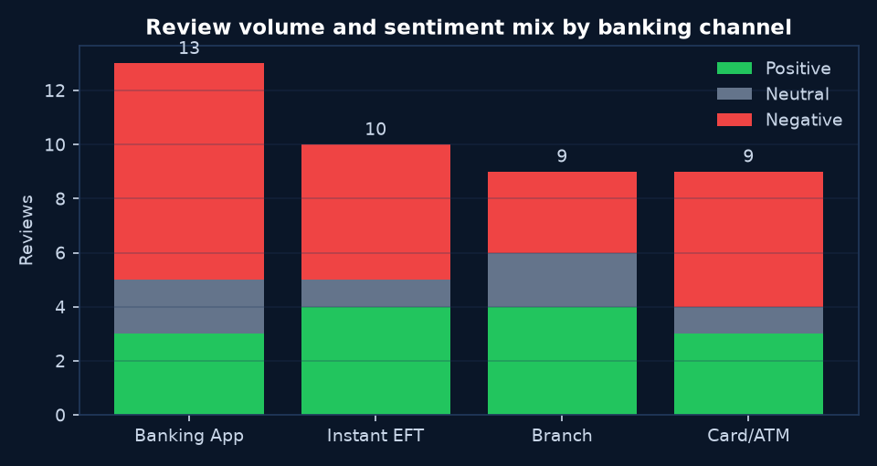
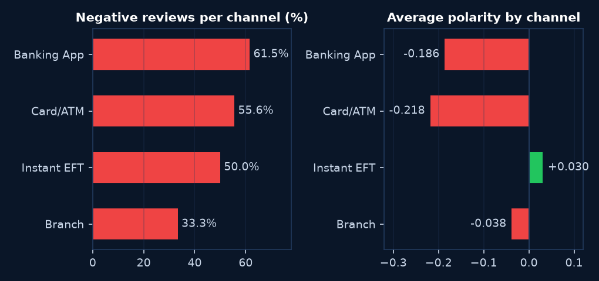
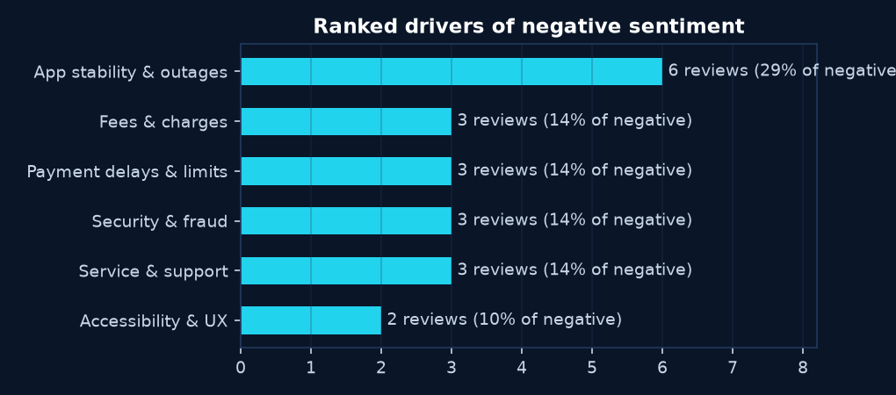
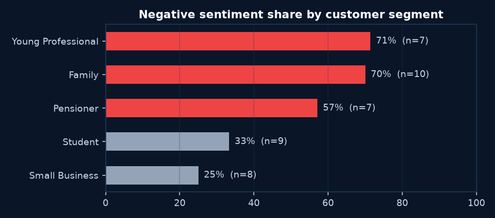

Business Insights Report · Retail Banking
| Prepared by | Junior Information Specialist (with Freddy Thosago, tool author) |
| Source tool | Retail Banking Sentiment Analysis Dashboard — Streamlit + TextBlob (github.com/tshepisofrominnostation/banking-sentiment-dashboard) |
| Dataset | 41 customer reviews, Sep–Oct 2026, four channels: Banking App, Instant EFT, Branch, Card/ATM |
| Method | TextBlob polarity scoring, thresholds: Positive > +0.1, Negative < −0.1, else Neutral |
| Date | 16 October 2026 |
This report converts 41 raw customer reviews from the bank's four retail channels into measurable sentiment findings using the sentiment dashboard tool. Every number below is computed by the tool, not estimated.
Overall the customer base leans negative: 51.2% of reviews score negative against 34.1% positive (average polarity −0.108). The three most important findings:

The negative majority (21 of 41 reviews) is not evenly spread — the next section compares channels to show where it concentrates. Only 6 reviews are genuinely neutral (factual statements with no sentiment-bearing language); the bank is generating strong reactions, both good and bad, from most customers.
| Channel | Reviews | Positive | Neutral | Negative | % Negative | % Positive | Avg Polarity |
|---|---|---|---|---|---|---|---|
| Banking App | 13 | 3 | 2 | 8 | 61.5% | 23.1% | −0.186 |
| Card/ATM | 9 | 3 | 1 | 5 | 55.6% | 33.3% | −0.218 |
| Instant EFT | 10 | 4 | 1 | 5 | 50.0% | 40.0% | +0.030 |
| Branch | 9 | 4 | 2 | 3 | 33.3% | 44.4% | −0.038 |
Shaded rows: red = weakest channel by negative share; green = strongest channel. Avg polarity: mean TextBlob compound score per channel.


Banking App vs Branch is the starkest contrast: the App is 61.5% negative while the Branch is 44.4% positive — a 28-percentage-point gap in negative share between the bank's most digital and most human channels. The App also receives the highest review volume (13 of 41, 32% of all feedback), so its problems dominate the overall numbers.
Card/ATM: low volume, high severity. Its negative share (55.6%) is second, but its average polarity (−0.218) is the lowest of all channels — when ATM customers complain, they complain severely (retained cards, cash-out outages on payday). This matters for a low-volume channel: each incident hits a customer at a critical moment (payday, pension draw).
Instant EFT is the quiet middle. 50% negative but positive-leaning average polarity (+0.030): the half that works, works well ("money arrived instantly"); the complaints are concentrated in overnight settlement delays and low limits.
The 14 positive reviews cluster around three strengths the bank should protect: branch staff quality ("Opened a business account in one visit, the consultant knew his products inside out" — R031, polarity +1.0), app reliability when it works ("Biometric login works flawlessly and the notifications are instant" — R006, +0.67), and innovative self-service ("Cardless cash withdrawal worked first time at the ATM. Wonderful." — R017, +0.62).

| Rank | Driver | Reviews | % of negative | Representative evidence (verbatim) |
|---|---|---|---|---|
| 1 | App stability & outages | 6 | 28.6% | "The app crashed twice during load shedding while I was paying my exam fees." |
| 2 | Fees & charges | 3 | 14.3% | "Fees went up again without any warning. This feels dishonest." |
| 2 | Payment delays & limits | 3 | 14.3% | "My instant EFT sat pending overnight and no one could tell me why." |
| 2 | Security & fraud | 3 | 14.3% | "The ATM kept my card on payday and I had to order a replacement." |
| 2 | Service & support | 3 | 14.3% | "Queued for 45 minutes at month end just to draw my pension." |
| 6 | Accessibility & UX | 2 | 9.5% | "The statements are hard to read… small text for older eyes." |

The digital divide is generational. Young Professionals (71.4% negative, avg polarity −0.338) and Families (70.0%) are the unhappiest segments — both are heavy app and EFT users, so they absorb the App's stability problems directly. Small Business clients are the happiest (25.0% negative, avg +0.301), and their praise centres on branch consulting and same-day batch payments. Pensioners (57.1% negative) complain about branch queues and ATM card retention, not digital issues.
Each recommendation states the finding it comes from (with its number), the action, and the metric to track.
Method: 41 reviews (bundled demonstration dataset representative of SA retail banking feedback, Sep–Oct 2026) were ingested, preprocessed (lowercasing, URL and special-character removal via regex) and scored with TextBlob polarity/subjectivity. Sentiment thresholds: Positive > +0.1, Negative < −0.1, Neutral otherwise. Negative drivers were identified by keyword-theme matching across negative reviews. All figures were produced by the dashboard tool's analysis functions on 16 October 2026.
Limitations: (1) 41 reviews is a small sample — percentages carry wide confidence intervals and should be read as directional. (2) Lexicon-based scoring (TextBlob) misses sarcasm and SA slang, and can underweight words like "furious" or "unacceptable" that its lexicon does not score. (3) Theme matching is keyword-based; a review can carry multiple themes or none. (4) The dataset is a realistic demonstration set, not live production feedback. Recommended next step: re-run on live complaint exports and 500+ reviews, and pilot an LLM-based classifier for comparison against the TextBlob baseline.
Most negative
"Queued for 45 minutes at month end just to draw my pension. Terrible experience." — R004, Branch, polarity −1.0
"The ATM kept my card on payday and I had to order a replacement. Disgusted." — R021, Card/ATM, polarity −1.0
"The app crashed twice during load shedding while I was paying my exam fees." — R034, Banking App, polarity −1.0
Most positive
"Opened a business account in one visit, the consultant knew his products inside out." — R031, Branch, polarity +1.0
"Biometric login works flawlessly and the notifications are instant. Very impressed." — R006, Banking App, polarity +0.67
"Cardless cash withdrawal worked first time at the ATM. Wonderful." — R017, Card/ATM, polarity +0.62